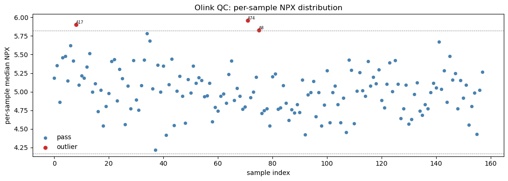
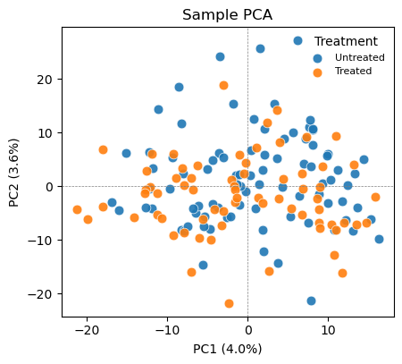
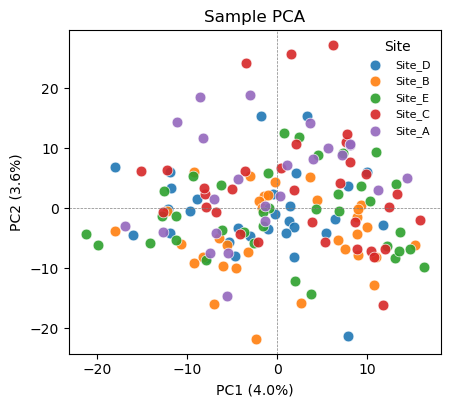
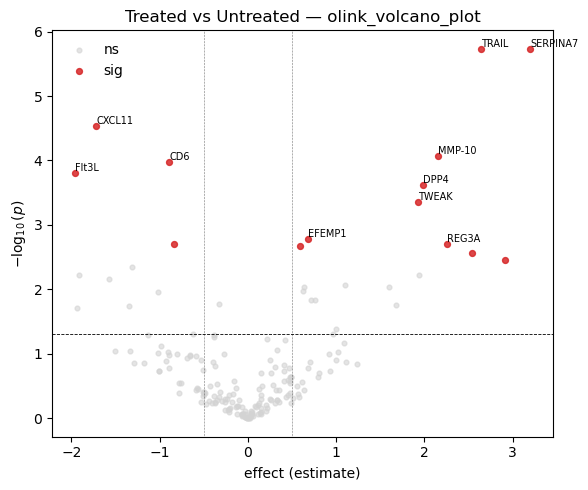
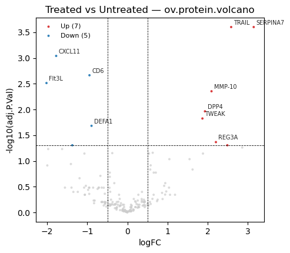
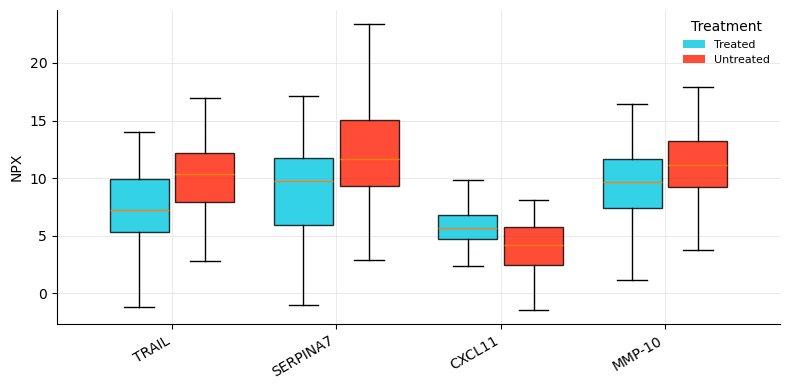
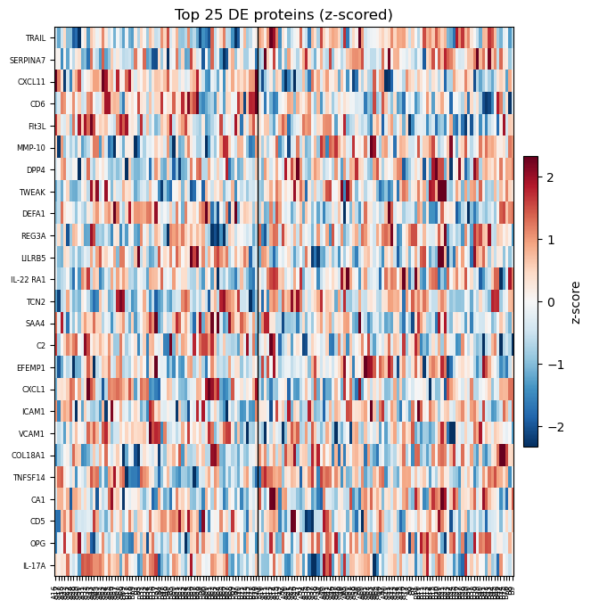

Olink NPX — affinity proteomics analysis#
Olink is an affinity (antibody-based) proteomics platform built on the Proximity Extension Assay (PEA). Each protein is detected by a pair of antibodies, each carrying a unique DNA oligo; when both antibodies bind the same target, the oligos hybridize, are extended by polymerase, and the resulting amplicon is quantified by qPCR or next-generation sequencing (Olink Explore). The readout is NPX — Normalized Protein eXpression, a relative abundance unit on an arbitrary log2 scale.
How affinity proteomics differs from mass spectrometry#
Aspect |
LC-MS/MS (discovery) |
Olink PEA (affinity) |
|---|---|---|
Targets |
Whole detectable proteome, unbiased |
Pre-defined antibody panels (≤ a few thousand proteins) |
Quantity |
Peptide intensities → protein summarization |
Direct per-protein NPX, already on log2 scale |
Missingness |
High, often MNAR → needs imputation |
Low — every assay measured in every sample |
Batch effects |
Run drift, normalization on intensities |
Plate effects → bridge normalization across batches |
Dynamic range |
Wide, abundance-dependent |
Excellent low-abundance sensitivity (cytokines, etc.) |
Why it matters#
Because PEA is sensitive, reproducible, and cheap per sample, it scales to population proteomics: the UK Biobank Pharma Proteomics Project (UKB-PPP) profiled ~3,000 plasma proteins in ~54,000 participants with Olink Explore. Multi-plate, multi-site studies at this scale make QC and bridge normalization central to the workflow.
This tutorial runs the complete OlinkAnalyze workflow on a real Olink Explore dataset (npx_data1 from the OlinkAnalyze R package) using omicverse’s ov.protein module and the standalone pyolinkanalyze package. NPX data is long-format, so most pyolinkanalyze functions operate directly on the long DataFrame, while ov.protein works on a pivoted samples × proteins AnnData.
0. Imports#
import omicverse as ov
import pyolinkanalyze as poa
import numpy as np
import pandas as pd
import anndata as adt
import matplotlib.pyplot as plt
1. Load NPX data#
ov.datasets.protein_olink() returns the real OlinkAnalyze example dataset npx_data1 as a long-format pandas DataFrame. Long format means one row per (sample, protein) measurement — not a sample × protein matrix. This is the native shape Olink delivers and the shape every pyolinkanalyze statistical function expects.
npx = ov.datasets.protein_olink()
print('shape:', npx.shape)
npx.head()
🔍 Downloading data to ./data/protein_olink_npx.csv.gz
⚠️ File ./data/protein_olink_npx.csv.gz already exists
shape: (29440, 17)
| SampleID | Index | OlinkID | UniProt | Assay | MissingFreq | Panel_Version | PlateID | QC_Warning | LOD | NPX | Subject | Treatment | Site | Time | Project | Panel | |
|---|---|---|---|---|---|---|---|---|---|---|---|---|---|---|---|---|---|
| 0 | A1 | 1 | OID01216 | O00533 | CHL1 | 0.01875 | v.1201 | Example_Data_1_CAM.csv | Pass | 2.368467 | 12.956143 | ID1 | Untreated | Site_D | Baseline | data1 | Olink Cardiometabolic |
| 1 | A2 | 2 | OID01216 | O00533 | CHL1 | 0.01875 | v.1201 | Example_Data_1_CAM.csv | Pass | 2.368467 | 11.269477 | ID1 | Untreated | Site_D | Week.6 | data1 | Olink Cardiometabolic |
| 2 | A3 | 3 | OID01216 | O00533 | CHL1 | 0.01875 | v.1201 | Example_Data_1_CAM.csv | Pass | 2.368467 | 25.451070 | ID1 | Untreated | Site_D | Week.12 | data1 | Olink Cardiometabolic |
| 3 | A4 | 4 | OID01216 | O00533 | CHL1 | 0.01875 | v.1201 | Example_Data_1_CAM.csv | Pass | 2.368467 | 14.453038 | ID2 | Untreated | Site_C | Baseline | data1 | Olink Cardiometabolic |
| 4 | A5 | 5 | OID01216 | O00533 | CHL1 | 0.01875 | v.1201 | Example_Data_1_CAM.csv | Pass | 2.368467 | 7.628712 | ID2 | Untreated | Site_C | Week.6 | data1 | Olink Cardiometabolic |
# Key long-format columns
print('columns:', list(npx.columns))
print('n unique assays (proteins):', npx['Assay'].nunique())
print('n unique samples :', npx['SampleID'].nunique())
columns: ['SampleID', 'Index', 'OlinkID', 'UniProt', 'Assay', 'MissingFreq', 'Panel_Version', 'PlateID', 'QC_Warning', 'LOD', 'NPX', 'Subject', 'Treatment', 'Site', 'Time', 'Project', 'Panel']
n unique assays (proteins): 184
n unique samples : 158
# Study design: group variable, sites, panels, plates
print('Treatment groups:'); print(npx['Treatment'].value_counts(dropna=False))
print('\nSites :', sorted(npx['Site'].dropna().unique()))
print('Panels:', list(npx['Panel'].unique()))
print('Plates:', npx['PlateID'].nunique(), '|', 'Timepoints:', list(npx['Time'].dropna().unique()))
Treatment groups:
Treatment
Untreated 16008
Treated 12696
NaN 736
Name: count, dtype: int64
Sites : ['Site_A', 'Site_B', 'Site_C', 'Site_D', 'Site_E']
Panels: ['Olink Cardiometabolic', 'Olink Inflammation']
Plates: 4 | Timepoints: ['Baseline', 'Week.6', 'Week.12']
The NPX long format. Each row carries the measurement (NPX) plus all identifying metadata: which sample (SampleID, Subject), which protein (OlinkID, Assay, UniProt), which panel/plate (Panel, PlateID, Panel_Version), per-assay QC (MissingFreq, LOD, QC_Warning), and the experimental design (Treatment, Site, Time).
This dataset spans two panels (Cardiometabolic + Inflammation, 184 assays total) across 4 plates and 5 sites, with a Treatment group variable (Treated vs Untreated). Note the two CONTROL_SAMPLE_AS rows have no Treatment — they are assay controls, not study subjects, and we exclude them from group comparisons.
2. Quality control#
Olink QC works at two levels:
Sample-level (
QC_Warning): flags samples where internal incubation/detection controls deviate — these whole samples are suspect.Assay-level (
MissingFreq,LOD):MissingFreqis the fraction of samples in which an assay fell below its Limit Of Detection (LOD). Assays with high missing frequency carry little signal.
A core sanity check is the per-sample NPX distribution: each sample should have a similar median and spread. An outlying sample (technical failure, low input) shows up as a shifted or compressed boxplot.
# Sample-level QC warnings
qc = npx.drop_duplicates('SampleID')
print('QC_Warning by sample:')
print(qc['QC_Warning'].value_counts(dropna=False))
flagged = qc.loc[qc['QC_Warning'] != 'Pass', 'SampleID'].tolist()
print('\nflagged samples:', flagged if flagged else 'none')
QC_Warning by sample:
QC_Warning
Pass 157
Warning 1
Name: count, dtype: int64
flagged samples: ['A15']
# Assay-level missingness: fraction of samples below LOD per assay
assay_miss = npx.drop_duplicates('Assay')[['Assay', 'MissingFreq']]
print('MissingFreq summary across {} assays:'.format(len(assay_miss)))
print(assay_miss['MissingFreq'].describe()[['min', '50%', 'max']])
print('\nassays with MissingFreq > 0.05:', int((assay_miss['MissingFreq'] > 0.05).sum()))
MissingFreq summary across 184 assays:
min 0.00625
50% 0.05625
max 0.10000
Name: MissingFreq, dtype: float64
assays with MissingFreq > 0.05: 98
Missingness is uniformly low (max ~10%) — a hallmark of affinity proteomics: every assay is measured in every sample, so there is no MNAR imputation problem as in LC-MS/MS. Now the per-sample distribution plot via pyolinkanalyze.olink_qc_plot, which marks samples whose NPX IQR or median falls outside iqr_mult× the cohort spread.
# Per-sample NPX distribution QC plot
fig, ax = plt.subplots(figsize=(11, 4))
poa.olink_qc_plot(npx, sample_col='SampleID', npx_col='NPX', iqr_mult=1.5, ax=ax)
ax.set_title('Olink QC: per-sample NPX distribution')
plt.tight_layout(); plt.show()

# LOD handling: NCLOD computes a negative-control-based LOD per assay
lod = poa.olink_lod(npx, lod_method='NCLOD', npx_col='NPX',
sample_col='SampleID', assay_col='OlinkID', sd_mult=3.0)
print('olink_lod output shape:', lod.shape)
lod[['OlinkID', 'Assay', 'LOD', 'PCNormalizedLOD']].drop_duplicates('OlinkID').head() \
if 'PCNormalizedLOD' in lod else lod.head()
olink_lod output shape: (29440, 18)
| SampleID | Index | OlinkID | UniProt | Assay | MissingFreq | Panel_Version | PlateID | QC_Warning | LOD | NPX | Subject | Treatment | Site | Time | Project | Panel | below_LOD | |
|---|---|---|---|---|---|---|---|---|---|---|---|---|---|---|---|---|---|---|
| 0 | A1 | 1 | OID01216 | O00533 | CHL1 | 0.01875 | v.1201 | Example_Data_1_CAM.csv | Pass | 21.333559 | 12.956143 | ID1 | Untreated | Site_D | Baseline | data1 | Olink Cardiometabolic | True |
| 1 | A2 | 2 | OID01216 | O00533 | CHL1 | 0.01875 | v.1201 | Example_Data_1_CAM.csv | Pass | 21.333559 | 11.269477 | ID1 | Untreated | Site_D | Week.6 | data1 | Olink Cardiometabolic | True |
| 2 | A3 | 3 | OID01216 | O00533 | CHL1 | 0.01875 | v.1201 | Example_Data_1_CAM.csv | Pass | 21.333559 | 25.451070 | ID1 | Untreated | Site_D | Week.12 | data1 | Olink Cardiometabolic | False |
| 3 | A4 | 4 | OID01216 | O00533 | CHL1 | 0.01875 | v.1201 | Example_Data_1_CAM.csv | Pass | 21.333559 | 14.453038 | ID2 | Untreated | Site_C | Baseline | data1 | Olink Cardiometabolic | True |
| 4 | A5 | 5 | OID01216 | O00533 | CHL1 | 0.01875 | v.1201 | Example_Data_1_CAM.csv | Pass | 21.333559 | 7.628712 | ID2 | Untreated | Site_C | Week.6 | data1 | Olink Cardiometabolic | True |
olink_lod recomputes a Limit-Of-Detection per assay from negative controls (NCLOD = max negative-control NPX + sd_mult×SD). Comparing each measurement to its LOD lets you flag below-LOD values — useful for deciding which low-signal assays to drop before differential testing. Here we keep all assays since missingness is already low.
3. Bridge / batch normalization#
Large Olink studies are run in batches — different plates, different runs, sometimes different sites or years. Each batch has its own systematic NPX offset. To make NPX comparable across batches you use bridge normalization:
Include a set of shared bridging samples (the same physical samples) on every batch.
For each assay, compute the median NPX difference of the bridge samples between the reference batch and the target batch.
Subtract that per-assay offset from the entire target batch.
Good bridge samples are representative (typical NPX, low below-LOD rate) so the offset they define generalizes. pyolinkanalyze.olink_bridge_selector picks them automatically.
# Drop assay controls; keep only study subjects for analysis
npx_s = npx[npx['Treatment'].notna() &
~npx['SampleID'].str.startswith('CONTROL')].copy()
print('analysis rows:', npx_s.shape, '| samples:', npx_s['SampleID'].nunique())
analysis rows: (28704, 17) | samples: 156
# Pick 8 representative bridging samples (low below-LOD fraction)
bridge = poa.olink_bridge_selector(npx_s, sample_missing_freq=0.1, n=8, seed=0)
bridge_ids = bridge['SampleID'].tolist()
print('selected bridge samples:', bridge_ids)
bridge
selected bridge samples: ['A70', 'A31', 'B16', 'A66', 'A72', 'B8', 'A26', 'B26']
| SampleID | PercAssaysBelowLOD | MeanNPX | |
|---|---|---|---|
| 0 | A70 | 0.043478 | 6.304760 |
| 1 | A31 | 0.021739 | 6.209815 |
| 2 | B16 | 0.081522 | 6.251585 |
| 3 | A66 | 0.070652 | 6.074096 |
| 4 | A72 | 0.043478 | 6.136644 |
| 5 | B8 | 0.059783 | 6.462233 |
| 6 | A26 | 0.059783 | 6.366970 |
| 7 | B26 | 0.054348 | 5.988154 |
This single dataset is one batch, so there is no second project to genuinely bridge to. To demonstrate the mechanics honestly, we construct a synthetic second batch by adding a uniform +0.7 NPX plate shift to a copy of the data. olink_normalization_bridge should then use the shared bridge samples to detect and remove that shift, restoring the two batches to a common scale.
# Synthetic second batch with a known +0.7 NPX plate offset
p1 = npx_s.copy()
p2 = npx_s.copy()
p2['NPX'] = p2['NPX'] + 0.7
print('mean NPX P1: {:.3f} | P2 (shifted): {:.3f}'
.format(p1['NPX'].mean(), p2['NPX'].mean()))
mean NPX P1: 5.889 | P2 (shifted): 6.589
# Bridge-normalize P2 onto P1 using the shared bridge samples
norm = poa.olink_normalization_bridge(
p1, p2, bridge_samples=bridge_ids,
project_1_name='P1', project_2_name='P2', project_ref_name='P1')
after = norm.groupby('Project')['NPX'].mean()
print('mean NPX after bridge normalization:')
print(after.round(3))
mean NPX after bridge normalization:
Project
P1 5.889
P2 5.889
Name: NPX, dtype: float64
After bridge normalization the two batches sit on the same NPX scale — the artificial +0.7 plate offset has been removed using only the 8 shared bridge samples. In a real multi-batch study this is what makes UKB-PPP-scale meta-analysis possible. pyolinkanalyze also offers olink_normalization (intensity/reference-median based) and olink_normalization_reference_medians for when no bridge samples are available.
4. Pivot to AnnData & explore#
pyolinkanalyze’s statistical functions consume the long DataFrame, but for matrix-style exploration (PCA, heatmaps, ov.protein DE) we pivot the long NPX to a samples × proteins AnnData. We index on SampleID, spread Assay across columns, and attach the per-sample design (Treatment, Site, Subject, Time) to obs.
# Long -> wide pivot (samples x proteins)
wide = npx_s.pivot_table(index='SampleID', columns='Assay',
values='NPX', aggfunc='mean')
X = wide.to_numpy(dtype=float)
X = np.where(np.isnan(X), np.nanmean(X), X) # fill the rare below-LOD gap
print('matrix:', X.shape, '| residual NaN:', int(np.isnan(X).sum()))
matrix: (156, 184) | residual NaN: 0
# Build AnnData with per-sample obs and per-protein var metadata
obs = (npx_s.drop_duplicates('SampleID').set_index('SampleID')
[['Treatment', 'Site', 'Subject', 'Time', 'PlateID']]
.reindex(wide.index).astype(str))
var = (npx_s.drop_duplicates('Assay').set_index('Assay')
[['OlinkID', 'UniProt', 'Panel']].reindex(wide.columns))
adata = adt.AnnData(X=X, obs=obs, var=var)
adata
AnnData object with n_obs × n_vars = 156 × 184
obs: 'Treatment', 'Site', 'Subject', 'Time', 'PlateID'
var: 'OlinkID', 'UniProt', 'Panel'
# Median-center across samples. log2=False: NPX is ALREADY on a log2 scale!
ov.protein.normalize(adata, method='median', log2=False)
print('normalized; layers:', list(adata.layers.keys()))
normalized; layers: ['raw']
# PCA colored by the biological group of interest
ov.protein.pca_plot(adata, color='Treatment')
plt.show()

# PCA colored by Site -> check for a technical / batch axis
ov.protein.pca_plot(adata, color='Site')
plt.show()

Color the same PCA by the biological variable (Treatment) and by a potential technical variable (Site). If samples cluster by Site rather than Treatment, a site/batch effect is dominating the variance and should be regressed out (or handled with a mixed model) before interpreting group differences. If Site is well mixed, the cohort is comparable and the leading variance is biological. pyolinkanalyze.olink_pca_plot produces the equivalent plot directly from the long DataFrame.
5. Differential expression#
Olink panels are small (here 184 assays) and missingness is low, so the standard approach is a per-protein two-group test — no peptide roll-up, no moderated variance borrowing strictly required. We run three complementary analyses:
pyolinkanalyze.olink_ttest— Welch t-test per assay, on the long DataFrame.pyolinkanalyze.olink_wilcox— non-parametric Mann–Whitney, robust to non-normal NPX.ov.protein.de(..., method='welch_t')— the same Welch test on the pivotedAnnData.
All use Benjamini–Hochberg FDR. The first two and the third should agree.
# Per-protein Welch t-test on the long NPX DataFrame
tt = poa.olink_ttest(npx_s, variable='Treatment')
n_sig_tt = int((tt['Adjusted_pval'] < 0.05).sum())
print('olink_ttest : {} / {} assays FDR < 0.05'.format(n_sig_tt, len(tt)))
tt.sort_values('p.value').head()
olink_ttest : 14 / 184 assays FDR < 0.05
| OlinkID | Assay | UniProt | Panel | term | estimate | statistic | p.value | Adjusted_pval | Threshold | |
|---|---|---|---|---|---|---|---|---|---|---|
| 0 | OID00488 | TRAIL | P50591 | Olink Inflammation | Untreated - Treated | 2.639456 | 4.970362 | 0.000002 | 0.000171 | 1 |
| 1 | OID01232 | SERPINA7 | P05543 | Olink Cardiometabolic | Untreated - Treated | 3.200750 | 4.978796 | 0.000002 | 0.000171 | 1 |
| 2 | OID00486 | CXCL11 | O14625 | Olink Inflammation | Untreated - Treated | -1.718869 | -4.309713 | 0.000030 | 0.001814 | 1 |
| 3 | OID00527 | MMP-10 | P09238 | Olink Inflammation | Untreated - Treated | 2.149888 | 4.054861 | 0.000085 | 0.003903 | 1 |
| 4 | OID00499 | CD6 | Q8WWJ7 | Olink Inflammation | Untreated - Treated | -0.889727 | -3.989178 | 0.000106 | 0.003903 | 1 |
# Non-parametric Mann-Whitney as a robustness check
wx = poa.olink_wilcox(npx_s, variable='Treatment')
n_sig_wx = int((wx['Adjusted_pval'] < 0.05).sum())
print('olink_wilcox : {} / {} assays FDR < 0.05'.format(n_sig_wx, len(wx)))
olink_wilcox : 13 / 184 assays FDR < 0.05
# Same Welch test via ov.protein.de on the pivoted AnnData
de = ov.protein.de(adata, group='Treatment', method='welch_t')
n_sig_de = int((de['adj.P.Val'] < 0.05).sum())
print('ov.protein.de: {} / {} assays FDR < 0.05'.format(n_sig_de, len(de)))
de.sort_values('P.Value').head()
ov.protein.de: 12 / 184 assays FDR < 0.05
| gene | logFC | AveExpr | t | P.Value | adj.P.Val | |
|---|---|---|---|---|---|---|
| 0 | SERPINA7 | 3.144091 | 10.825873 | 4.910163 | 0.000003 | 0.000251 |
| 1 | TRAIL | 2.582797 | 8.853974 | 4.883764 | 0.000003 | 0.000251 |
| 2 | CXCL11 | -1.775528 | 4.639429 | -4.478312 | 0.000015 | 0.000911 |
| 3 | CD6 | -0.946386 | 2.219474 | -4.203037 | 0.000047 | 0.002163 |
| 4 | Flt3L | -2.016890 | 5.019380 | -4.046551 | 0.000083 | 0.003064 |
# Cross-check: do the long-format and AnnData Welch tests agree?
cmp = (tt.set_index('Assay')[['p.value']]
.join(de.set_index('gene')[['P.Value']], how='inner'))
r = np.corrcoef(np.log10(cmp['p.value']), np.log10(cmp['P.Value']))[0, 1]
print('correlation of log10 p-values (olink_ttest vs ov.protein.de): {:.4f}'.format(r))
print('=> the two implementations agree.')
correlation of log10 p-values (olink_ttest vs ov.protein.de): 0.9889
=> the two implementations agree.
# Multi-level factor: one-way ANOVA across the 5 Sites
an = poa.olink_anova(npx_s, variable='Site')
print('olink_anova (Site, 5 levels): {} / {} assays FDR < 0.05'
.format(int((an['Adjusted_pval'] < 0.05).sum()), len(an)))
an.sort_values('p.value')[['Assay', 'statistic', 'p.value', 'Adjusted_pval']].head()
olink_anova (Site, 5 levels): 22 / 184 assays FDR < 0.05
| Assay | statistic | p.value | Adjusted_pval | |
|---|---|---|---|---|
| 0 | TRAIL | 8.137222 | 0.000006 | 0.001053 |
| 1 | CCL18 | 7.359446 | 0.000019 | 0.001280 |
| 2 | MCP-1 | 7.180249 | 0.000026 | 0.001280 |
| 3 | PLXNB2 | 7.124786 | 0.000028 | 0.001280 |
| 5 | IL13 | 5.355663 | 0.000464 | 0.014184 |
The Welch t-test on the long DataFrame and on the AnnData give effectively identical p-values — a useful consistency check between the two entry points. olink_anova extends the same idea to a multi-level factor (Site); for repeated-measures designs (Subject measured at Baseline/Week.6/Week.12) pyolinkanalyze.olink_lmer fits a per-protein linear mixed model with Subject as a random effect.
6. Visualization#
Standard DE visuals: a volcano plot (effect size vs significance) to see overall structure, and a heatmap of the top hits to inspect their per-sample pattern.
# Volcano plot from the long-format t-test result
fig, ax = plt.subplots(figsize=(6, 5))
poa.olink_volcano_plot(tt, estimate_col='estimate', p_col='p.value',
label_col='Assay', threshold=0.05,
abs_fc_cutoff=0.5, n_label=10, ax=ax)
ax.set_title('Treated vs Untreated — olink_volcano_plot')
plt.tight_layout(); plt.show()

# Equivalent volcano from the ov.protein.de result
ov.protein.volcano(de, fc_col='logFC', p_col='adj.P.Val', raw_p_col='P.Value',
gene_col='gene', logfc_threshold=0.5, adj_p_threshold=0.05,
label_top=10, title='Treated vs Untreated — ov.protein.volcano')
plt.show()

# Boxplots of the top differential assays across Treatment
top_ids = tt.sort_values('p.value').head(4)['OlinkID'].tolist()
fig, ax = plt.subplots(figsize=(8, 4))
poa.olink_boxplot(npx_s, variable='Treatment', olinkids=top_ids,
label_col='Assay', ax=ax)
plt.tight_layout(); plt.show()

# Heatmap of the top DE proteins (z-scored per protein)
ov.protein.heatmap(adata, de, group='Treatment', n_top=25,
gene_col='gene', p_col='adj.P.Val')
plt.show()

7. Pathway enrichment#
To move from a list of significant proteins to biology, test whether the hits are enriched for known gene sets. pyolinkanalyze.olink_pathway_enrichment takes the DE result plus a gene_sets dictionary ({set_name: [gene symbols]}) and runs over-representation (ora) or GSEA.
Real analyses supply curated gene sets — MSigDB Hallmark / Reactome / GO, loadable with pyolinkanalyze.read_gmt('hallmark.gmt'). Those .gmt files are not bundled offline, so here we build small illustrative sets directly from the data to demonstrate the call; swap in a real .gmt for production use.
# Illustrative gene sets (replace with read_gmt('hallmark.gmt') in practice)
ranked = tt.sort_values('p.value')
gene_sets = {
'Top_DE_signature': ranked.head(20)['Assay'].tolist(),
'Inflammation_panel': npx_s.loc[npx_s['Panel'].str.contains('Inflamm'),
'Assay'].unique().tolist(),
'Cardiometabolic_panel': npx_s.loc[npx_s['Panel'].str.contains('Cardio'),
'Assay'].unique().tolist(),
}
print({k: len(v) for k, v in gene_sets.items()})
{'Top_DE_signature': 20, 'Inflammation_panel': 92, 'Cardiometabolic_panel': 92}
# Over-representation test of the significant proteins against the gene sets
enr = poa.olink_pathway_enrichment(
tt, gene_sets=gene_sets, method='ora',
gene_col='Assay', estimate_col='estimate', p_col='p.value',
pvalue_cutoff=0.05, min_size=3)
enr[['Description', 'setSize', 'Count', 'GeneRatio', 'pvalue', 'p.adjust']]
| Description | setSize | Count | GeneRatio | pvalue | p.adjust | |
|---|---|---|---|---|---|---|
| 0 | Top_DE_signature | 20 | 20 | 20/32 | 8.103508e-19 | 2.431052e-18 |
| 1 | Inflammation_panel | 92 | 16 | 16/32 | 5.769672e-01 | 5.769672e-01 |
| 2 | Cardiometabolic_panel | 92 | 16 | 16/32 | 5.769672e-01 | 5.769672e-01 |
The result shows, for each gene set, how many of the significant proteins it contains (Count / GeneRatio) and the over-representation p-value. With a curated database (read_gmt of MSigDB/Reactome/GO) this is how Olink hits are mapped to inflammatory, cardiometabolic, or immune pathways. ov.protein.enrich offers an alternative entry point that scores enrichment activity directly on the AnnData using decoupler-style methods.
Summary#
The Olink NPX workflow recipe:
Load the long-format NPX table (
ov.datasets.protein_olink()here;pyolinkanalyze.read_npx_*for real files).QC — sample-level
QC_Warning, assay-levelMissingFreq/LOD(olink_qc_plot,olink_lod).Bridge-normalize across plates/batches with
olink_bridge_selector+olink_normalization_bridge.Pivot to a samples × proteins
AnnData; explore withpca_plot(biology vs batch).Differential expression per protein —
olink_ttest/olink_wilcox/olink_anova/olink_lmer, orov.protein.de.Visualize —
olink_volcano_plot,olink_boxplot,ov.protein.heatmap.Pathway enrichment with
olink_pathway_enrichmentagainst MSigDB/Reactome/GO.
How affinity proteomics differs from the LC-MS/MS tutorials:
LC-MS/MS workflow |
Olink PEA workflow |
|---|---|
Peptide → protein summarization |
None — NPX is already per-protein |
log2 transform intensities |
None — NPX is already log2 ( |
MNAR imputation of many missing values |
Not needed — missingness is low |
Intensity / median normalization |
Bridge normalization across plates/batches |
Whole proteome, abundance-biased |
Targeted panels, sensitive to low-abundance proteins |
Related tutorials: t_protein_01–t_protein_04 cover the mass-spectrometry side — reading MaxQuant/DIA-NN/FragPipe output, peptide summarization, MNAR-aware imputation, and DEqMS/limma differential expression. Use those for discovery LC-MS/MS; use this Olink workflow for targeted, population-scale affinity proteomics.